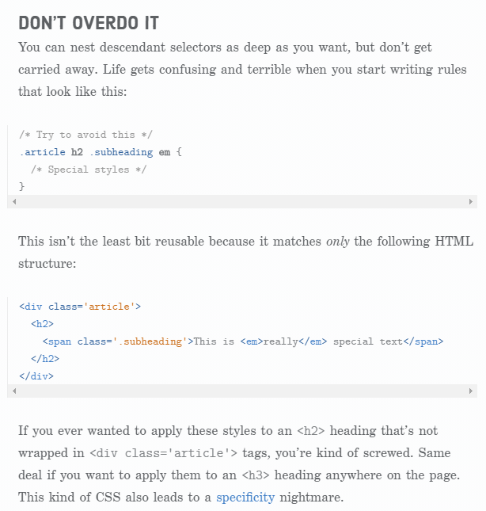

CSS selectors let you select individual HTML elements in an HTML document. This is super useful.
Classes are ridiculously important, since they allow you to select arbitrary boxes in your web pages.
We’ll also be talking about links in this example, so here’s Interneting Is Hard for us to style.
Button One Button Two Button Third > Open! Don't OverDo It